Show code cell source
import warnings
warnings.filterwarnings("ignore")
import sys
import os.path as op
import xarray as xr
import pandas as pd
import requests
from io import BytesIO
import numpy as np
import matplotlib.pyplot as plt
sys.path.append("../../../functions")
from tcs import Extract_Circle
from data_downloaders import download_ibtracs
sys.path.append("../../../../indicators_setup")
from ind_setup.plotting_tcs import Plot_TCs_HistoricalTracks_Category
from ind_setup.plotting import plot_bar_probs, plot_tc_categories_trend
from ind_setup.tables import plot_df_table
from ind_setup.plotting import plot_bar_probs_ONI, add_oni_cat
from data_downloaders import download_oni_index
---------------------------------------------------------------------------
ModuleNotFoundError Traceback (most recent call last)
Cell In[1], line 13
10 import matplotlib.pyplot as plt
12 sys.path.append("../../../functions")
---> 13 from tcs import Extract_Circle
14 from data_downloaders import download_ibtracs
16 sys.path.append("../../../../indicators_setup")
ModuleNotFoundError: No module named 'tcs'
lon_lat = [134.5, 5.5] #Palau location lon, lat
basin = 'WP'
r1 = 5 # Radius of the circular area in degrees
update_data = False
path_data = "../../../data"
path_figs = "../../../matrix_cc/figures"
Show code cell source
if update_data:
url = 'https://www.ncei.noaa.gov/data/international-best-track-archive-for-climate-stewardship-ibtracs/v04r01/access/netcdf/IBTrACS.ALL.v04r01.nc'
tcs = download_ibtracs(url, basin = basin)
tcs.to_netcdf(f"{path_data}/tcs_{basin}.nc")
else:
tcs = xr.load_dataset(f"{path_data}/tcs_{basin}.nc")
tcs = tcs.isel(storm = np.where(tcs.isel(date_time = 0).time.dt.year >= 1950)[0])
Show code cell source
# tcs = xr.open_dataset('/Users/laurac/Downloads/IBTrACS.ALL.v04r01.nc')
Show code cell source
d_vns = {
'longitude': 'lon',
'latitude': 'lat',
'time': 'time',
'pressure': 'wmo_pres',
'wind': 'wmo_wind',
}
tcs_sel, tcs_sel_params = Extract_Circle(tcs, lon_lat[0], lon_lat[1], r1, d_vns, fillwinds=True)
tcm = tcs_sel.max(dim = 'date_time')
tcmin = tcs_sel.min(dim = 'date_time')
tcs_sel_params['category'] = (('storm'), np.where(np.isnan(tcs_sel_params.category), -1, tcs_sel_params.category))
lon1, lon2 = 90, 200
lat1, lat2 = -10, 70
# r1
ax = Plot_TCs_HistoricalTracks_Category(
tcs_sel, tcs_sel_params.category,
lon1, lon2, lat1, lat2,
lon_lat[0], lon_lat[1], r1,
)
plt.savefig(op.join(path_figs, 'F8_TCs_Historical.png'), dpi=300, bbox_inches='tight')
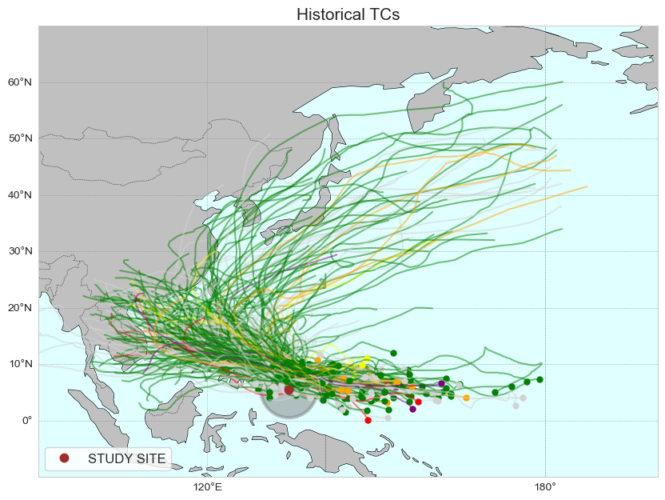
import matplotlib.pyplot as plt
tcs_sel_params['month'] = tcs_sel_params.dmin_date.dt.month
tcs_sel_params.to_dataframe().groupby('month').count().index_in.plot.bar(figsize = (12, 4), color = 'lightblue', alpha = .5)
plt.ylabel('Number of TCs', fontsize = 14)
plt.xlabel('Month', fontsize = 14)
Text(0.5, 0, 'Month')
tcs_sel_params_severe = tcs_sel_params.where(tcs_sel_params.category >=3, drop=True)
tcs_sel_severe = tcs_sel.sel(storm=tcs_sel_params_severe.storm)
lon1, lon2 = 90, 200
lat1, lat2 = -10, 70
# r1
ax = Plot_TCs_HistoricalTracks_Category(
tcs_sel_severe, tcs_sel_params_severe.category,
lon1, lon2, lat1, lat2,
lon_lat[0], lon_lat[1], r1,
)
ax.set_title('Severe Historical TCs [Categories 3, 4 and 5]', fontsize = 14)
plt.savefig(op.join(path_figs, 'F8_TCs_Historical_Severe.png'), dpi=300, bbox_inches='tight')
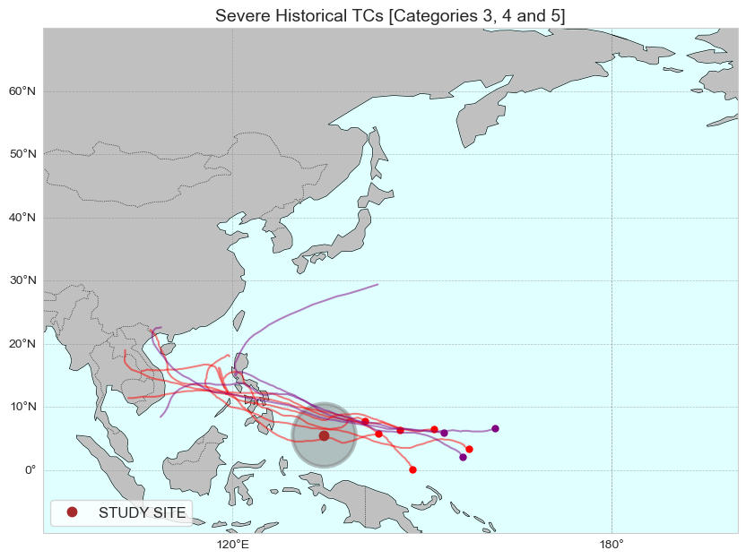
u, c = np.unique(tcs_sel_params.category, return_counts=True)
import matplotlib.pyplot as plt
fig, ax = plt.subplots(1, figsize=(10, 4))
ax.grid(zorder = -1)
tcs_sel_params.category.plot.hist(bins=range(7), ax=ax, color='plum', alpha=0.5, edgecolor= None, width = .8, linewidth=1, label = 'All TCs')
tcs_sel_params.where(tcs_sel_params.dmin_date.dt.year >=1979,
drop = True).category.plot.hist(bins=range(7), ax=ax,
color='darkmagenta', alpha=0.5, edgecolor='crimson', width = .8, linewidth=1, label = 'TCs after 1979')
ax.set_xlabel('Category')
ax.set_ylabel('Counts')
ax.legend()
<matplotlib.legend.Legend at 0x17a813f80>
plot_tc_categories_trend(tcs_sel_params)
plt.savefig(op.join(path_figs, 'F8_TCs_Historical_bars_category.png'), dpi=300, bbox_inches='tight')
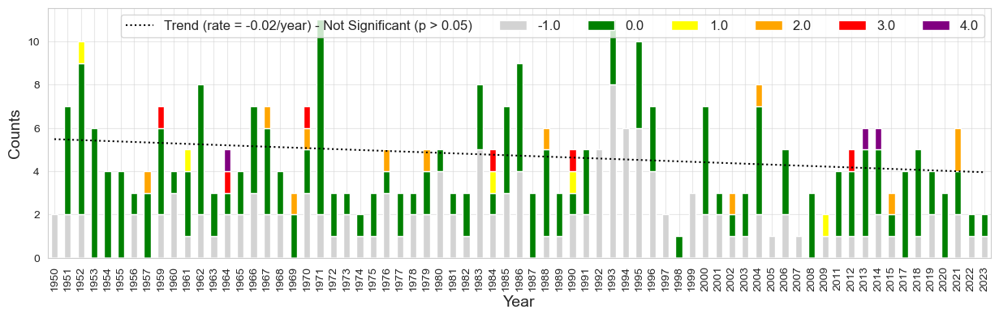
time = tcs_sel_params.dmin_date.dt.year.values
u, cu = np.unique(time, return_counts=True)
plot_bar_probs(x = u, y = cu, figsize= (15, 4), trendline = True,
y_label = 'Number TCs')
(<Figure size 1500x400 with 1 Axes>, <Axes: ylabel='Number TCs'>)
tcs_sel_severe_params = tcs_sel_params.where(tcs_sel_params.category >=3, drop = True)
time = tcs_sel_severe_params.dmin_date.dt.year.values
u, cu = np.unique(time, return_counts=True)
plot_bar_probs(x = u, y = cu, figsize= (15, 4), trendline = True,
y_label = 'Number of severe TCs')
(<Figure size 1500x400 with 1 Axes>, <Axes: ylabel='Number of severe TCs'>)
for category in np.arange(-1, 6, 1):
tcs_cat = tcs_sel.where(tcs_sel_params.category == category, drop = True)
tcs_cat_params = tcs_sel_params.where(tcs_sel_params.category == category, drop = True)
# r1
ax = Plot_TCs_HistoricalTracks_Category(
tcs_cat, tcs_cat_params.category,
lon1, lon2, lat1, lat2,
lon_lat[0], lon_lat[1], r1,
)
ax.set_title(f'Historical TCs Category {category}', fontsize=15)
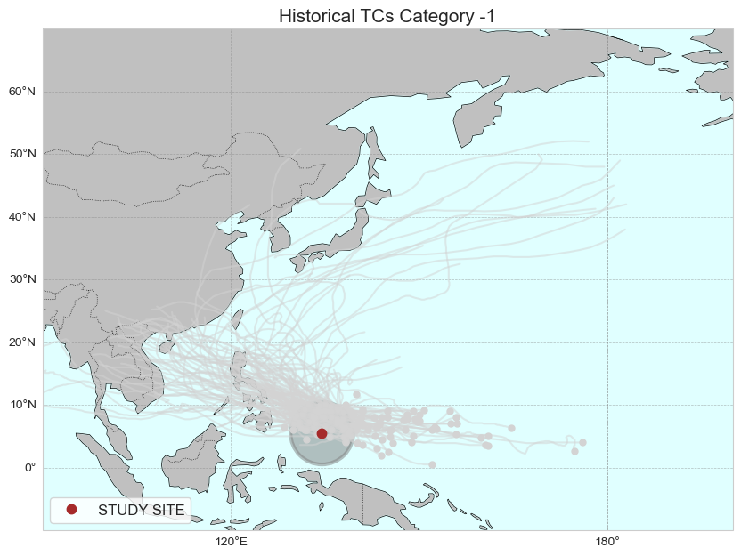
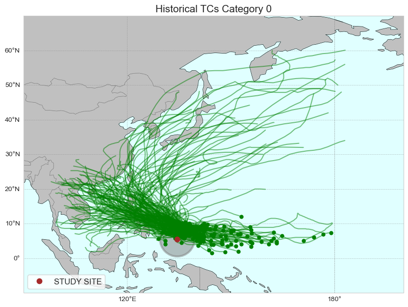
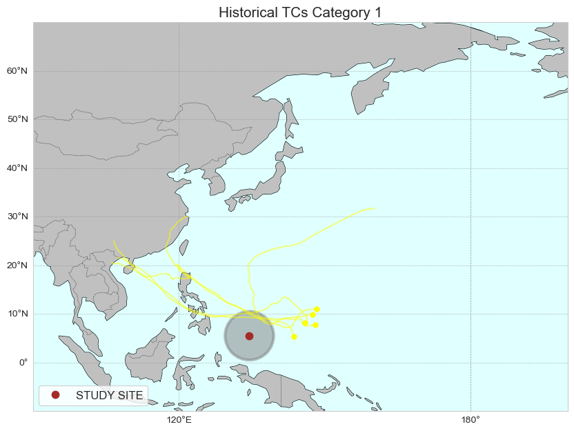
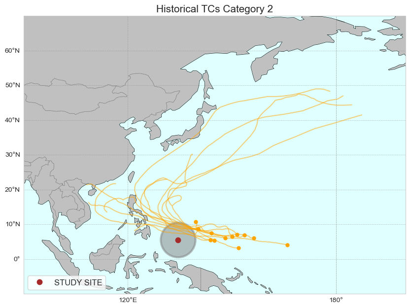
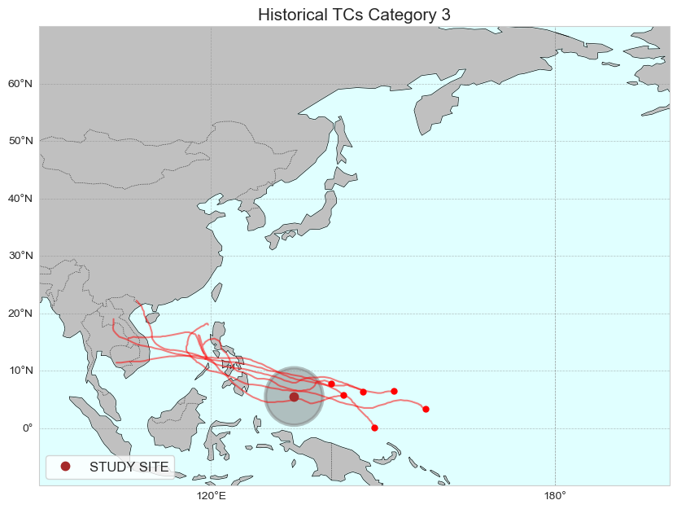
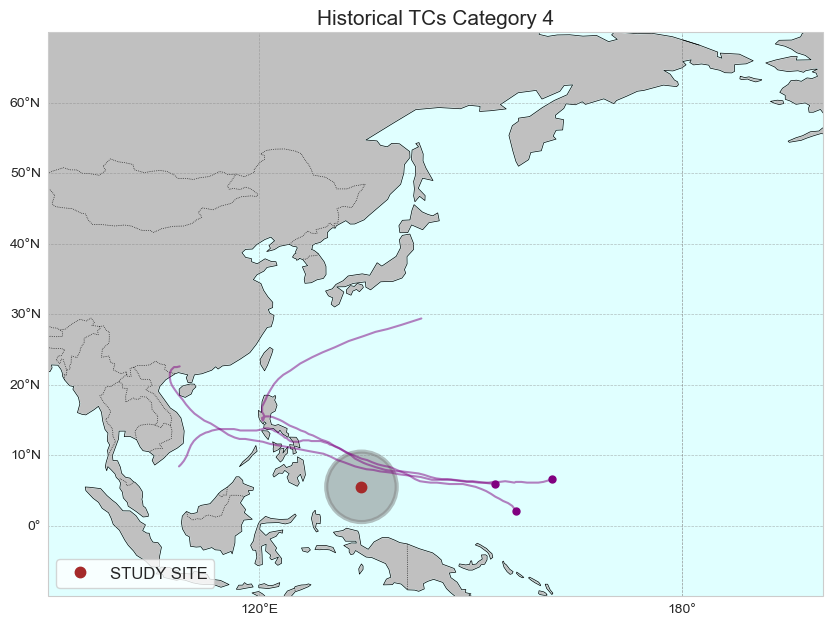
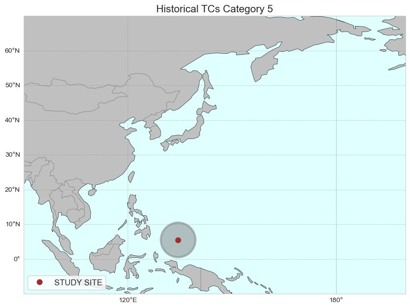
df_tcs = tcs_sel_params.to_dataframe()
df_tcs['year'] = df_tcs.dmin_date.dt.year
df_t = df_tcs.groupby('category').count()[['pressure_min']]
fig = plot_df_table(df_t, figsize = (300, 220))
mean_tcs_per_year = df_tcs.groupby(df_tcs['dmin_date'].dt.year)['pressure_min'].count()
df_sev = df_tcs.loc[df_tcs['category'] >=3]
mean_tcs_per_year_sev = df_sev.groupby(df_sev['dmin_date'].dt.year)['pressure_min'].count()
print('Mean TCs per year: ', np.nanmean(mean_tcs_per_year))
print('Mean number of severe TCs per year: ', np.round(np.nanmean(mean_tcs_per_year_sev), 2))
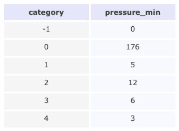
Mean TCs per year: 2.8450704225352115
Mean number of severe TCs per year: 1.12
p_data = 'https://psl.noaa.gov/data/correlation/oni.data'
if update_data:
df1 = download_oni_index(p_data)
df1.to_pickle(op.join(path_data, 'oni_index.pkl'))
else:
df1 = pd.read_pickle(op.join(path_data, 'oni_index.pkl'))
oni = df1
lims = [-.5, .5]
df1 = add_oni_cat(df1, lims = lims)
import pandas as pd
tcs_g = pd.DataFrame(tcs_sel.isel(date_time = 0).time.values)
tcs_g.index = tcs_g[0]
tcs_g.index = pd.DatetimeIndex(tcs_g.index).to_period('M').to_timestamp() + pd.offsets.MonthBegin(0)
tcs_g['oni_cat'] = oni.oni_cat
tcs_sel_params['oni_cat'] = (('storm'), tcs_g['oni_cat'].values)
tcs_sel['oni_cat'] = (('storm'), tcs_g['oni_cat'].values)
# oni['ONI_cat'] = np.where(oni.ONI < lims[0], -1, np.where(oni.ONI > lims[1], 1, 0))
tcs_sel_params['oni_cat'] = (('storm'), tcs_sel.oni_cat.values)
oni_perc_cat = oni.groupby('oni_cat').size() / oni.shape[0] * 100
oni_perc_cat
oni_cat
-1 33.783784
0 36.486486
1 29.729730
dtype: float64
tcs_perc_cat = tcs_sel_params.to_dataframe().groupby('oni_cat').size() * 100 / tcs_sel_params.to_dataframe().shape[0]
tcs_perc_cat
oni_cat
-1.0 30.746269
0.0 43.283582
1.0 25.373134
dtype: float64
#Relavice probability
tcs_perc_cat / oni_perc_cat
oni_cat
-1.0 0.910090
0.0 1.186291
1.0 0.853460
dtype: float64
time = tcs_sel_params.dmin_date.dt.year.values
u, cu = np.unique(time, return_counts=True)
tc_c = pd.DataFrame(cu, index = u)
time_sev = tcs_sel_params.where(tcs_sel_params.category >= 3, drop = True).dmin_date.dt.year.values
u_sev, cu_sev = np.unique(time_sev, return_counts=True)
tc_c_sev = pd.DataFrame(cu_sev, index = u_sev)
oni_y = oni.groupby(oni.index.year).min()
oni_y['tc_counts'] = tc_c
oni_y['tc_counts_sev'] = tc_c_sev
oni_y['oni_cat'] = oni_y.oni_cat.values
ax = plot_bar_probs_ONI(oni_y, 'tc_counts', y_label= 'TC counts - ALL');

ax = plot_bar_probs_ONI(oni_y, 'tc_counts_sev', y_label= 'TC counts - Severe');
plt.savefig(op.join(path_figs, f'F9_TCs_severe_bars_trend.png'), dpi=300, bbox_inches='tight')
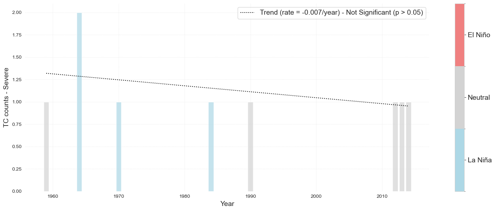
names_cat = ['La Niña', 'Neutral', 'El Niño']
for ic, category in enumerate([-1, 0, 1]):
tcs_cat = tcs_sel.where(tcs_sel_params.oni_cat == category, drop = True)
tcs_cat_params = tcs_sel_params.where(tcs_sel_params.oni_cat == category, drop = True)
ax = Plot_TCs_HistoricalTracks_Category(
tcs_cat, tcs_cat_params.category,
lon1, lon2, lat1, lat2,
lon_lat[0], lon_lat[1], r1,
)
ax.set_title(f'Historical TCs: {names_cat[ic]}', fontsize=15)
plt.savefig(op.join(path_figs, f'F9_TCs_{names_cat[ic]}.png'), dpi=300, bbox_inches='tight')
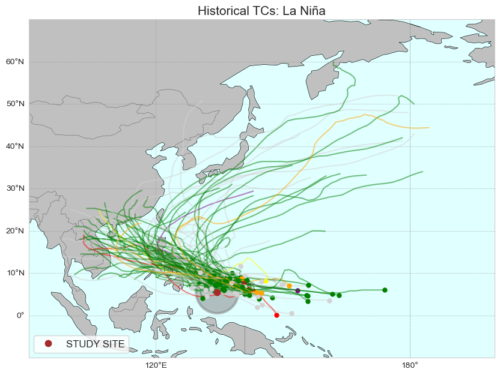
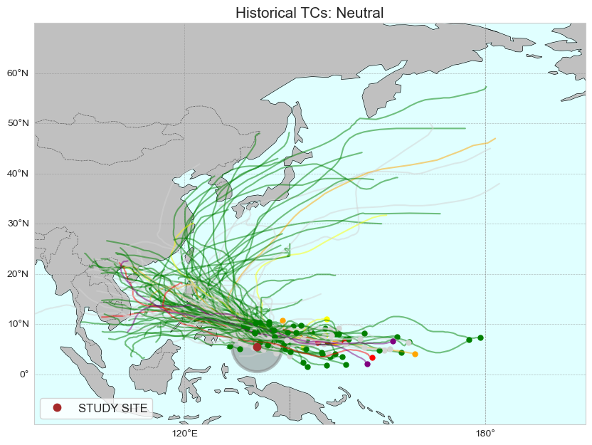
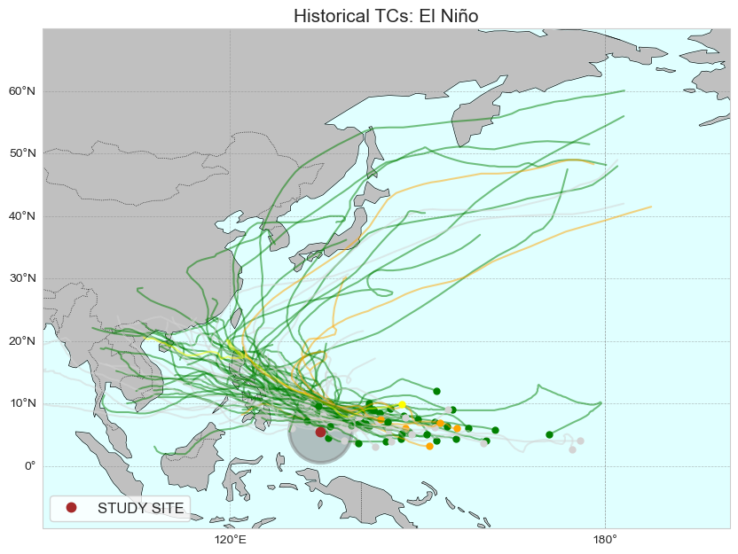
storms_severe_ids = tcs_sel_params.storm.where(tcs_sel_params.category >= 3, drop = True).values
storms_severe = tcs_sel.sel(storm = storms_severe_ids)
storm_severe_params = tcs_sel_params.sel(storm = storms_severe_ids)
names_cat = ['La Niña', 'Neutral', 'El Niño']
for ic, category in enumerate([-1, 0, 1]):
tcs_cat = storms_severe.where(storm_severe_params.oni_cat == category, drop = True)
tcs_cat_params = storm_severe_params.where(storm_severe_params.oni_cat == category, drop = True)
ax = Plot_TCs_HistoricalTracks_Category(
tcs_cat, tcs_cat_params.category,
lon1, lon2, lat1, lat2,
lon_lat[0], lon_lat[1], r1,
)
ax.set_title(f'Historical SEVERE TCs: {names_cat[ic]}', fontsize=15)
plt.savefig(op.join(path_figs, f'F9_TCs_{names_cat[ic]}_SEVERE.png'), dpi=300, bbox_inches='tight')
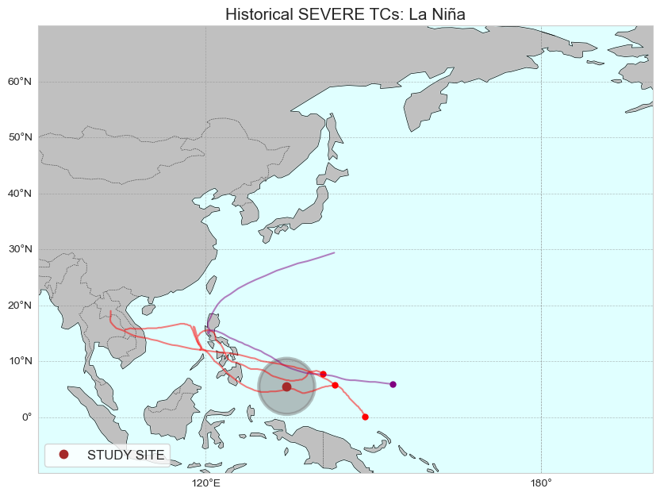
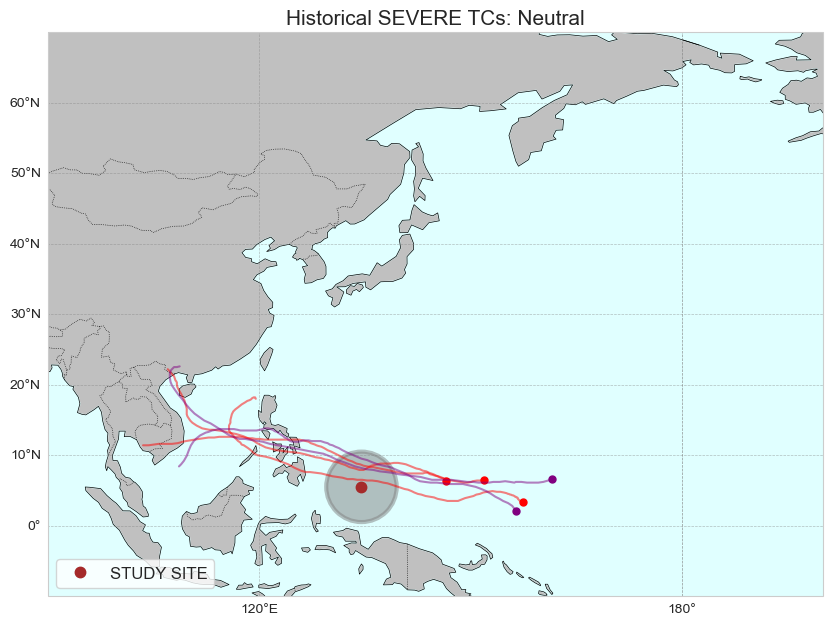
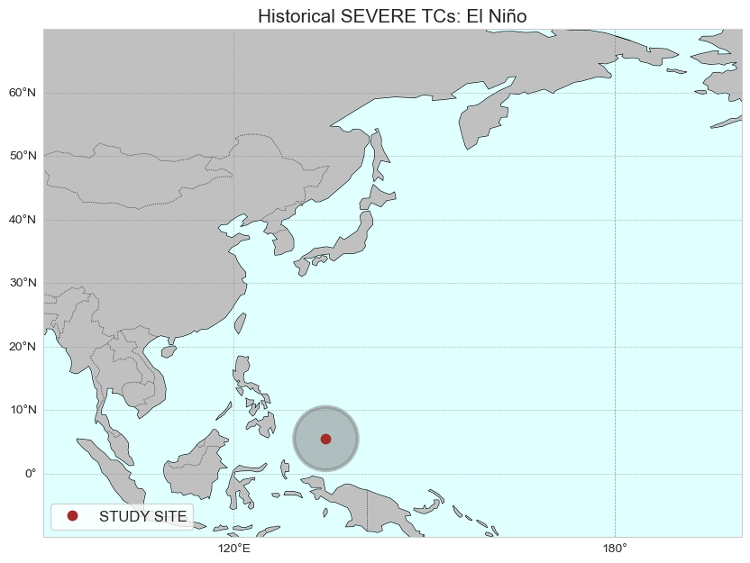